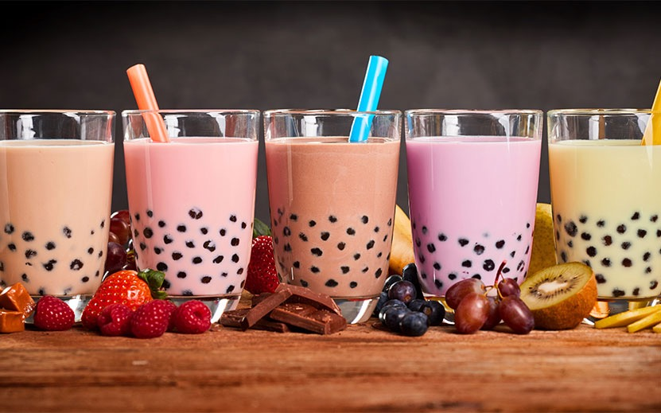

home
How to Make Boba Tea

Description
Bubble tea is a tea-based drink that originated in Taiwan in the early 1980s.
Taiwanese immigrants brought it to the United States in the 1990s,
initially in California through regions including Los Angeles County,
but the drink has also spread to other countries where there is a large East Asian diaspora population.
Ingrediants
- 8 bags of black tea or 3 tablespoons loose-leaf black tea
- 4 cups hot water
- 3/4 cup quick-cooking tapioca pearls
- whole milk to serve, or your choice of milk
- simple syrup to serve, or your choice of sweetener
Instructions
- Make the boba pearls: Add the water and muscovado sugar to a medium pan over medium-high heat.
Cook until the sugar dissolves and the mixture comes to a boil, 3–4 minutes.
Add a bit of the tapioca flour and cook, stirring constantly, until smooth.
Add half of the remaining tapioca flour and stir vigorously until a sticky dough forms.
Turn off the heat and add the remaining tapioca flour.
Stir until the dough comes together in a ball (not all of the flour will be incorporated at this stage).
Let cool slightly.
- Turn the dough out onto a clean surface.
Knead until all of the flour is incorporated and the dough is smooth,
adding more flour or water as needed if the dough is too sticky or too dry.
- Divide the dough into 2 portions.
Roll the dough into long, thin ropes about ¼-inch (6.35 mm) thick, cutting in half crosswise if they get too long.
Cut the ropes into ¼-inch (6.35 mm) pieces.
Roll each piece into a ball and place in a bowl with a bit of tapioca flour.
Dust the balls with the flour to prevent them from sticking to each other.
- Bring a large pot of water to a boil.
Shake off any excess flour from the tapioca pearls, then add to the boiling water.
Stir to separate the pearls, then reduce the heat to medium-low. Simmer gently, stirring occasionally,
for about 20 minutes, until cooked through.
- Meanwhile, make the brown sugar syrup: Add the muscovado sugar and water to a small saucepan over medium heat.
Cook until the sugar dissolves and the syrup reduces slightly, 5–7 minutes.
Pour the syrup into a large heatproof bowl.
- Once the pearls have cooked through, drain and rinse with cold water.
Add the pearls to the bowl with the brown sugar syrup and let sit for 30–60 minutes.
- Make the black tea: In a medium pot over high heat, combine the water and tea bags.
Bring to a boil, then remove the pan from the heat and let the tea cool to room temperature.
- Make the milk mixture: In a small bowl or liquid measuring cup,
whisk together the half-and-half and sweetened condensed milk until combined.
- Assemble the boba milk tea: Add about ⅓ cup (80 ml) boba pearls and brown sugar syrup to the bottom of each glass.
Top with 1½ cups (225 grams) ice, then add ½ cup (240 ml) black tea and 3 tablespoons of the milk mixture.
Stir with a wide-opening straw, then serve.
- And last but not least, enjoy!!.